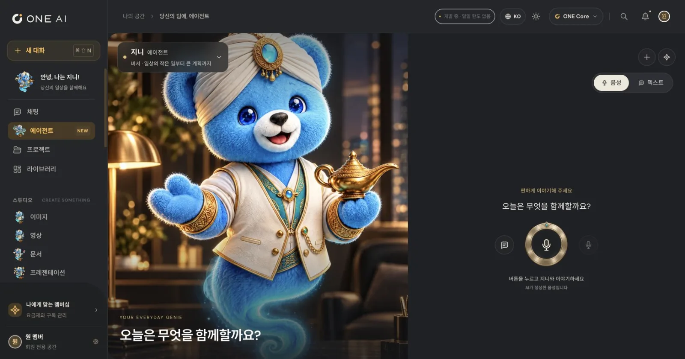
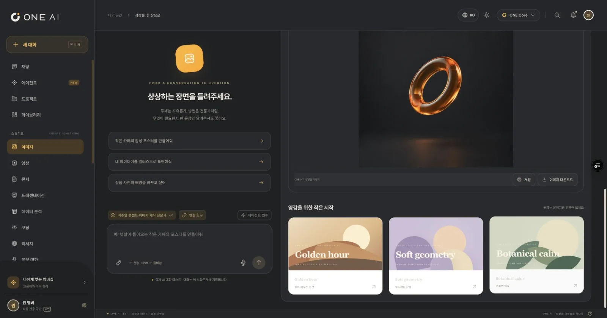
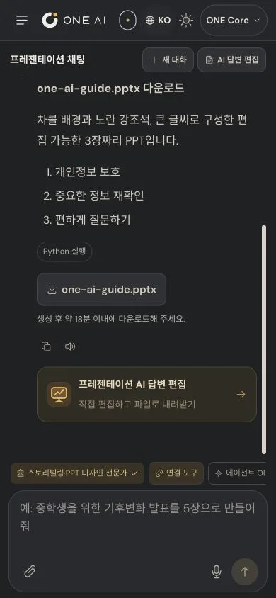

How we built it
The work takes shape beside the chat
In ONE AI, the chat and the result editor open side by side. When the AI drafts a document in chat, you edit it in the editor on the right and download it as Word or PDF.
Presentations export to PPTX after you edit the slides, and data analysis exports to Excel with the formulas still working. Less copying answers into other programs to redo them.
Genie, the agent you hand work to by voice
The Agent menu in the sidebar is where Genie, a character agent, waits. Text and voice history sit together, and one button starts a real-time voice conversation where you can hand Genie the work.
Voice conversations also connect only through the server path behind member authentication, and the server manages the tools Genie uses.

Real AI, for verified members only
Since October 12, 2026, AI chat, attachment analysis, web search, and image creation and editing on the production domain run through a server path behind member authentication. For every request, the server checks the member session and a unique request ID.
The server enforces the daily usage limit itself and rechecks the type and size of every attachment, keeping both cost and security in check even during the trial stage.

The same workspace on your phone
On mobile, the chat and results sit in separate tabs, and the screen height and safe areas are recalculated so the keyboard never hides the input box. Add it to your Home Screen to use it like an app.
What you make collects in the library, and projects group conversations, materials and instructions so you can keep going.
